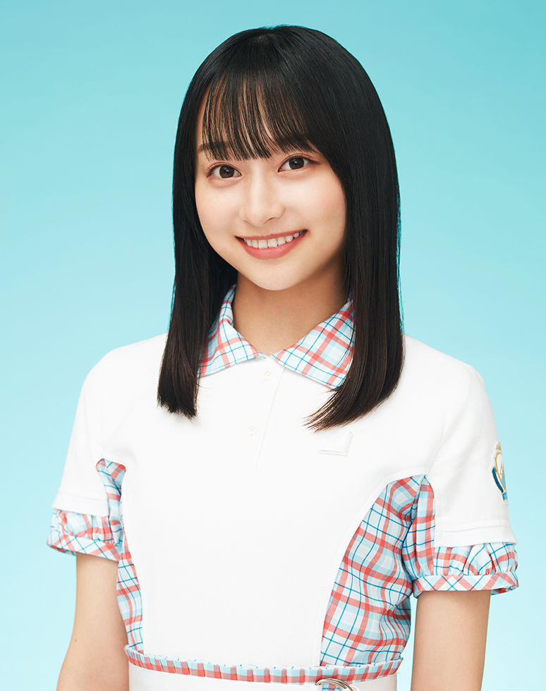

サカミチ
サカミチ影山優佳かげやまゆうか

ひなたざか（2020年）・最新
日向坂46 1期生 ・ 卒業・活動終了
所属歴：けやき坂46
センター曲：2曲（シングル表題曲センター：0曲） フォーメーション/歌唱参加：40曲
ライブ記録：センター 10公演・出演記録のある公演 120公演
ブログ記事：1279件
学年：2001年度（同級生 全17人を見る）
フォーメーション統計：登場 39曲・フロント（1列目）9曲
よく隣になるメンバー：高瀬愛奈（14回）、佐々木久美（8回）、松田好花（8回）
センター曲
推しに登録すると、トップページに「推しの新着」（最新のブログ）が出ます。
歴代アー写など（8枚）
タップすると上の写真が切り替わります。上の写真をタップすると最新のアー写に戻ります。